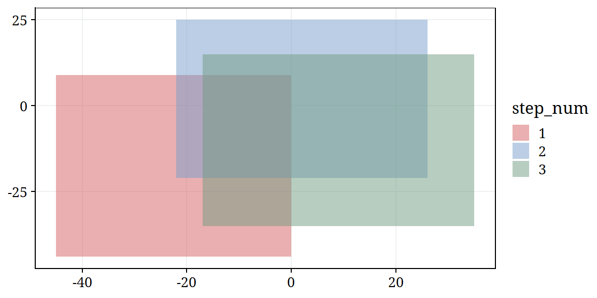
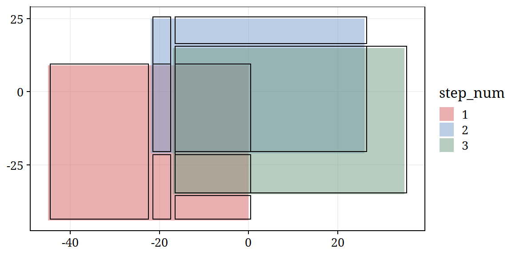

My solutions to the #AdventOfCode2021 coding challenges, days 21 through 25.
knitr::opts_chunk$set(echo = TRUE)
library(tidyverse)
library(here)
library(gt)
library(tictoc)
library(lubridate)
library(dunnr)
extrafont::loadfonts(device = "win", quiet = TRUE)
theme_set(theme_td_grid())
set_geom_fonts()
set_palette()
Sys.setenv(
RETICULATE_PYTHON = here("..", "python", ".venv", "Scripts", "python.exe")
)
library(reticulate)
import numpy as np
import pandas as pd
import timeitday21 <- read_lines(here("_posts", "2021-12-21-advent-of-code-2021-days-21-25",
"day21-input.txt"))
day21 %>% str_trunc(80)
[1] "Player 1 starting position: 8" "Player 2 starting position: 1"There’s not much to do as you slowly descend to the bottom of the ocean. The submarine computer challenges you to a nice game of Dirac Dice.
This game consists of a single die, two pawns, and a game board with a circular track containing ten spaces marked
1through10clockwise. Each player’s starting space is chosen randomly (your puzzle input). Player 1 goes first.Players take turns moving. On each player’s turn, the player rolls the die three times and adds up the results. Then, the player moves their pawn that many times forward around the track (that is, moving clockwise on spaces in order of increasing value, wrapping back around to
1after10). So, if a player is on space7and they roll2,2, and1, they would move forward 5 times, to spaces8,9,10,1, and finally stopping on2.After each player moves, they increase their score by the value of the space their pawn stopped on. Players’ scores start at
0. So, if the first player starts on space7and rolls a total of5, they would stop on space2and add2to their score (for a total score of2). The game immediately ends as a win for any player whose score reaches at least1000.Since the first game is a practice game, the submarine opens a compartment labeled deterministic dice and a 100-sided die falls out. This die always rolls
1first, then2, then3, and so on up to100, after which it starts over at 1 again. Play using this die.The moment either player wins, what do you get if you multiply the score of the losing player by the number of times the die was rolled during the game?
player1 <- str_extract(day21[1], "position: \\d") %>% readr::parse_number()
player2 <- str_extract(day21[2], "position: \\d") %>% readr::parse_number()
player1; player2
[1] 8[1] 1Define a custom modulo function that returns 1-10 instead of 0-9:
custom_mod <- function(val) {
((val - 1) %% 10) + 1
}
Loop until a winner is found:
player1_score <- player2_score <- dice <- turn <- 0
while (player1_score < 1000 & player2_score < 1000) {
turn <- turn + 1
dice <- dice + 3
roll <- sum(seq(dice, dice - 2))
if (turn %% 2 == 1) {
player1 <- custom_mod(player1 + roll)
player1_score <- player1_score + player1
} else {
player2 <- custom_mod(player2 + roll)
player2_score <- player2_score + player2
}
}
player1_score; player2_score
[1] 1000[1] 694Multiply the turn number by 3 to get the number of dice rolls, then multiply that by the losing players score:
(turn * 3) * player2_score
[1] 518418Python:
player1 = int(r.day21[0][-1])
player2 = int(r.day21[1][-1])
player1_score, player2_score, dice, turn = 0, 0, 0, 0
while player1_score < 1000 and player2_score < 1000:
turn += 1
dice += 3
roll = sum(range(dice - 2, dice + 1))
if turn % 2 == 1:
player1 = ((player1 + roll - 1) % 10) + 1
player1_score += player1
else:
player2 = ((player2 + roll - 1) % 10) + 1
player2_score += player2
turn * 3 * player2_score518418Now that you’re warmed up, it’s time to play the real game.
A second compartment opens, this time labeled Dirac dice. Out of it falls a single three-sided die.
As you experiment with the die, you feel a little strange. An informational brochure in the compartment explains that this is a quantum die: when you roll it, the universe splits into multiple copies, one copy for each possible outcome of the die. In this case, rolling the die always splits the universe into three copies: one where the outcome of the roll was
1, one where it was2, and one where it was3.The game is played the same as before, although to prevent things from getting too far out of hand, the game now ends when either player’s score reaches at least
21.
On each turn, the Dirac dice is rolled three times, leading to \(3 \times 3 \times 3 = 27\) permutations, i.e. 27 universes. However, the sum of these three rolls can only take on the following values:
roll_perm <- crossing(r1 = 1:3, r2 = 1:3, r3 = 1:3) %>%
mutate(roll = r1 + r2 + r3) %>%
count(roll)
roll_perm
# A tibble: 7 x 2
roll n
<int> <int>
1 3 1
2 4 3
3 5 6
4 6 7
5 7 6
6 8 3
7 9 1Define a function to roll the dice for a single player, but keep track of the states of the game (instead of each game individually), where a state is uniquely identified by the positions and scores of players 1 and 2.
roll_dirac <- function(players, player = 1) {
players <- players %>% crossing(roll_perm)
if (player == 1) {
players <- players %>%
mutate(pos1 = custom_mod(pos1 + roll), score1 = score1 + pos1,
n_univ = n_univ * n)
} else {
players <- players %>%
mutate(pos2 = custom_mod(pos2 + roll), score2 = score2 + pos2,
n_univ = n_univ * n)
}
players %>%
group_by(pos1, score1, pos2, score2) %>%
summarise(n_univ = sum(n_univ), .groups = "drop")
}
# Sample input
players <- tibble(pos1 = 4, score1 = 0, pos2 = 8, score2 = 0, n_univ = 1)
# After two turns
players %>% roll_dirac(player = 1) %>% roll_dirac(player = 2)
# A tibble: 49 x 5
pos1 score1 pos2 score2 n_univ
<dbl> <dbl> <dbl> <dbl> <dbl>
1 1 1 1 1 6
2 1 1 2 2 18
3 1 1 3 3 36
4 1 1 4 4 42
5 1 1 5 5 36
6 1 1 6 6 18
7 1 1 7 7 6
8 2 2 1 1 3
9 2 2 2 2 9
10 2 2 3 3 18
# ... with 39 more rowsAfter each roll, the number of universes (n_univ) is updated for each state.
Then a function to find the winners in each universe. The loop works by removing winning states (winner_universes) from the active states (players) until none remain:
find_winners <- function(players) {
turn <- 0
# Empty tibble to compile winners
winner_universes <- players %>% filter(FALSE)
while (nrow(players) > 0) {
turn <- turn + 1
players <- roll_dirac(players,
player = ifelse(turn %% 2 == 1, 1, 2))
winners <- (players$score1 > 20) | (players$score2 > 20)
if (any(winners)) {
winner_universes <- winner_universes %>%
bind_rows(players %>% filter(winners))
players <- players %>% filter(!winners)
}
}
winner_universes
}
winner_universes <- find_winners(players)
winner_universes %>%
mutate(winner = ifelse(score1 > 20, "Player 1", "Player 2")) %>%
group_by(winner) %>%
summarise(n_univ = sum(n_univ), .groups = "drop") %>%
mutate(n_univ = format(n_univ, scientific = FALSE))
# A tibble: 2 x 2
winner n_univ
<chr> <chr>
1 Player 1 444356092776315
2 Player 2 341960390180808Now apply it to my input to find the puzzle answer:
players <- tibble(pos1 = player1, score1 = 0, pos2 = player2, score2 = 0,
n_univ = 1)
winner_universes <- find_winners(players)
winner_universes %>%
mutate(winner = ifelse(score1 > 20, "Player 1", "Player 2")) %>%
group_by(winner) %>%
summarise(n_univ = sum(n_univ), .groups = "drop") %>%
mutate(n_univ = format(n_univ, scientific = FALSE))
# A tibble: 2 x 2
winner n_univ
<chr> <chr>
1 Player 1 346642902541848
2 Player 2 262939886779945Python with numpy and pandas:
from itertools import product
roll_perm = list(product([1, 2, 3], [1, 2, 3], [1, 2, 3]))
roll_perm = [sum(rolls) for rolls in roll_perm]
roll_perm = pd.DataFrame(roll_perm, columns = ['roll']) \
.value_counts().to_frame('n').reset_index()
def roll_dirac(players, player = 1):
if player == 1:
players = players.merge(roll_perm, how = 'outer', on = 'join_key')
players = players \
.assign(pos1 = (players['pos1'] + players['roll'] - 1) % 10 + 1)
players = players \
.assign(score1 = players['score1'] + players['pos1'],
n_univ = players['n_univ'] * players['n'])
else:
players = players.merge(roll_perm, how = 'outer', on = 'join_key')
players = players \
.assign(pos2 = (players['pos2'] + players['roll'] - 1) % 10 + 1)
players = players \
.assign(score2 = players['score2'] + players['pos2'],
n_univ = players['n_univ'] * players['n'])
players = players \
.groupby(['pos1', 'score1', 'pos2', 'score2', 'join_key']) \
.agg({'n_univ': 'sum'}).reset_index()
return players
def find_winners(players):
turn = 0
winner_universes = players.drop(players.index)
while len(players) > 0:
turn += 1
player = 1 if (turn % 2 == 1) else 2
players = roll_dirac(players, player)
winners = (players['score1'].values > 20) | (players['score2'].values > 20)
if any(winners):
winner_universes = winner_universes.append(players.loc[winners])
players = players.loc[~winners]
return winner_universes
players = pd.DataFrame({'pos1': player1, 'pos2': player2,
'score1': 0, 'score2': 0, 'n_univ': 1}, index = [0])
# I'm not aware of a pandas function similar to tidyr::crossing, so use a hacky
# join_key column
roll_perm['join_key'] = 0
players['join_key'] = 0
winner_universes = find_winners(players)
winner_universes \
.assign(winner = np.where(winner_universes['score1'] > 20,
'Player 1', 'Player 2')) \
.groupby(['winner']) \
.agg({'n_univ': 'sum'}) n_univ
winner
Player 1 346642902541848
Player 2 262939886779945day22 <- read_lines(here("_posts", "2021-12-21-advent-of-code-2021-days-21-25",
"day22-input.txt"))
day22 %>% head()
[1] "on x=-45..0,y=-44..9,z=-39..10"
[2] "on x=-22..26,y=-21..25,z=-2..43"
[3] "on x=-17..35,y=-35..15,z=-27..25"
[4] "on x=-10..38,y=-46..6,z=-19..31"
[5] "on x=-19..28,y=-48..4,z=-47..4"
[6] "on x=-12..41,y=-45..7,z=-47..1" Operating at these extreme ocean depths has overloaded the submarine’s reactor; it needs to be rebooted.
The reactor core is made up of a large 3-dimensional grid made up entirely of cubes, one cube per integer 3-dimensional coordinate (
x,y,z). Each cube can be either on or off; at the start of the reboot process, they are all off. (Could it be an old model of a reactor you’ve seen before?)To reboot the reactor, you just need to set all of the cubes to either on or off by following a list of reboot steps (your puzzle input). Each step specifies a cuboid (the set of all cubes that have coordinates which fall within ranges for
x,y, andz) and whether to turn all of the cubes in that cuboid on or off.The initialization procedure only uses cubes that have
x,y, andzpositions of at least-50and at most50. For now, ignore cubes outside this region.Execute the reboot steps. Afterward, considering only cubes in the region
x=-50..50,y=-50..50,z=-50..50, how many cubes are on?
Parse the reboot steps:
reboot_steps <- tibble(x = day22) %>%
extract(
col = x, into = c("on", "xmin", "xmax", "ymin", "ymax", "zmin", "zmax"),
regex = "(.*) x=(.*)\\.\\.(.*),y=(.*)\\.\\.(.*),z=(.*)\\.\\.(.*)",
convert = TRUE
) %>%
# Use a logical to indicate on/off
mutate(on = on == "on", step_num = row_number())
reboot_steps
# A tibble: 420 x 8
on xmin xmax ymin ymax zmin zmax step_num
<lgl> <int> <int> <int> <int> <int> <int> <int>
1 TRUE -45 0 -44 9 -39 10 1
2 TRUE -22 26 -21 25 -2 43 2
3 TRUE -17 35 -35 15 -27 25 3
4 TRUE -10 38 -46 6 -19 31 4
5 TRUE -19 28 -48 4 -47 4 5
6 TRUE -12 41 -45 7 -47 1 6
7 TRUE -31 15 -49 -1 -18 30 7
8 TRUE -15 32 -36 12 -12 33 8
9 TRUE -47 2 -35 12 -9 37 9
10 TRUE -8 39 -41 10 -1 45 10
# ... with 410 more rowsFor part 1, I only need the steps within -50 and +50 in each dimension:
Represent the 100x100x100 grid of cubes with an array and a function to update it from a single step:
cubes <- array(FALSE, dim = c(100, 100, 100))
# For my own convenience, add 50 to each range so that I can index the array
# with 1-100
reboot_steps_part1 <- reboot_steps_part1 %>%
mutate(across(xmin:zmax, ~ . + 50))
switch_cubes <- function(cubes, reboot_step) {
cubes[reboot_step$xmin:reboot_step$xmax,
reboot_step$ymin:reboot_step$ymax,
reboot_step$zmin:reboot_step$zmax] <- reboot_step$on
return(cubes)
}
Now apply it and take the sum to get the number of on cubes:
for (reboot_step in reboot_steps_part1 %>% split(.$step_num)) {
cubes <- switch_cubes(cubes, reboot_step)
}
sum(cubes)
[1] 543306Now that the initialization procedure is complete, you can reboot the reactor.
Starting again with all cubes off, execute all reboot steps. Afterward, considering all cubes, how many cubes are on?
My solution to part 1 won’t do here.
# A tibble: 1 x 6
xmin ymin zmin xmax ymax zmax
<int> <int> <int> <int> <int> <int>
1 -97543 -97547 -94763 95984 97644 96256Can’t really work with a 20k x 20k x 20k grid in R.
Instead, for the cuboid defined in each step, I will consider every cuboid that came before it. If I find any intersecting cuboids, I will separate them into smaller cuboids that don’t intersect. For the on/off instruction of each cuboid, I will keep the last instruction.
get_cuboids <- function(reboot_steps) {
cuboids <- tibble(xmin = numeric(), xmax = numeric(),
ymin = numeric(), ymax = numeric(),
zmin = numeric(), zmax = numeric())
n_steps <- nrow(reboot_steps)
for (cuboid1 in reboot_steps %>% split(.$step_num)) {
message(paste0("Step ", cuboid1$step_num, " of ", n_steps))
# After a lot of trial and error with the example input, I found out that I
# had an off-by-one error that was fixed by nudging the upper bounds
cuboid1 <- cuboid1 %>%
mutate(xmax = xmax + 1, ymax = ymax + 1, zmax = zmax + 1)
# Declare an empty tibble to compile new cuboids
new_cuboids <- cuboids %>% filter(FALSE)
# Loop over the cuboids gathered so far
for (i in seq_len(nrow(cuboids))) {
cuboid2 <- cuboids %>% slice(i)
# Check if the new cuboid overlaps with the old cuboid
x_overlap <- (cuboid1$xmax > cuboid2$xmin) & (cuboid1$xmin < cuboid2$xmax)
y_overlap <- (cuboid1$ymax > cuboid2$ymin) & (cuboid1$ymin < cuboid2$ymax)
z_overlap <- (cuboid1$zmax > cuboid2$zmin) & (cuboid1$zmin < cuboid2$zmax)
if (x_overlap & y_overlap & z_overlap) {
# If the left edge of cuboid2 is to the left of cuboid1
if (cuboid2$xmin < cuboid1$xmin) {
# Slice off that portion into a new cuboid
new_cuboids <- new_cuboids %>%
bind_rows(cuboid2 %>% mutate(xmax = cuboid1$xmin))
# And shrink cuboid2, as the new cuboid covers that area already
cuboid2 <- cuboid2 %>% mutate(xmin = cuboid1$xmin)
}
# Do the same for the other 5 directions
if (cuboid2$xmax > cuboid1$xmax) {
new_cuboids <- new_cuboids %>%
bind_rows(cuboid2 %>% mutate(xmin = cuboid1$xmax))
cuboid2 <- cuboid2 %>% mutate(xmax = cuboid1$xmax)
}
if (cuboid2$ymin < cuboid1$ymin) {
new_cuboids <- new_cuboids %>%
bind_rows(cuboid2 %>% mutate(ymax = cuboid1$ymin))
cuboid2 <- cuboid2 %>% mutate(ymin = cuboid1$ymin)
}
if (cuboid2$ymax > cuboid1$ymax) {
new_cuboids <- new_cuboids %>%
bind_rows(cuboid2 %>% mutate(ymin = cuboid1$ymax))
cuboid2 <- cuboid2 %>% mutate(ymax = cuboid1$ymax)
}
if (cuboid2$zmin < cuboid1$zmin) {
new_cuboids <- new_cuboids %>%
bind_rows(cuboid2 %>% mutate(zmax = cuboid1$zmin))
cuboid2 <- cuboid2 %>% mutate(zmin = cuboid1$zmin)
}
if (cuboid2$zmax > cuboid1$zmax) {
new_cuboids <- new_cuboids %>%
bind_rows(cuboid2 %>% mutate(zmin = cuboid1$zmax))
cuboid2 <- cuboid2 %>% mutate(zmax = cuboid1$zmax)
}
}
else {
new_cuboids <- new_cuboids %>% bind_rows(cuboid2)
}
}
new_cuboids <- new_cuboids %>% bind_rows(cuboid1)
cuboids <- new_cuboids
}
return(cuboids)
}
As a demonstration, consider the first 3 steps (which happen to have overlapping cuboids) in just 2 dimensions:
reboot_steps3 <- reboot_steps %>% slice(1:3)
p <- reboot_steps3 %>%
mutate(step_num = factor(step_num)) %>%
ggplot(aes(xmin = xmin, xmax = xmax, ymin = ymin, ymax = ymax)) +
geom_rect(aes(fill = step_num),alpha = 0.5)
p

These are the resulting cuboids after splitting them at the intersections:
p +
geom_rect(
data = get_cuboids(reboot_steps3) %>%
# Shrink the areas slightly to visualize the borders
mutate(across(c(xmin, ymin), ~ .x + 0.5),
across(c(xmax, ymax), ~ .x - 0.5)),
fill = NA, color = "black")

Now run it on the full input (and time it because I expect it to take a long time):
~15 minute run time.
Now I have a list of cuboids which are non-overlapping. I can filter down to just the ones that are on and count their volumes to get the total number of on cubes:
cubes %>%
filter(on) %>%
mutate(volume = (xmax - xmin) * (ymax - ymin) * (zmax - zmin)) %>%
summarise(n_on = sum(volume) %>% format(scientific = FALSE))
# A tibble: 1 x 1
n_on
<chr>
1 1285501151402480A group of amphipods notice your fancy submarine and flag you down. “With such an impressive shell,” one amphipod says, “surely you can help us with a question that has stumped our best scientists.”
They go on to explain that a group of timid, stubborn amphipods live in a nearby burrow. Four types of amphipods live there: Amber (
A), Bronze (B), Copper (C), and Desert (D). They live in a burrow that consists of a hallway and four side rooms. The side rooms are initially full of amphipods, and the hallway is initially empty.They give you a diagram of the situation (your puzzle input), including locations of each amphipod (
A,B,C, orD, each of which is occupying an otherwise open space), walls (#), and open space (.).For example:
#############
#...........#
###B#C#B#D###
#A#D#C#A#
#########`The amphipods would like a method to organize every amphipod into side rooms so that each side room contains one type of amphipod and the types are sorted
A-Dgoing left to right, like this:
#############
#...........#
###A#B#C#D###
#A#B#C#D#
#########Amphipods can move up, down, left, or right so long as they are moving into an unoccupied open space. Each type of amphipod requires a different amount of energy to move one step: Amber amphipods require
1energy per step, Bronze amphipods require10energy, Copper amphipods require100, and Desert ones require1000. The amphipods would like you to find a way to organize the amphipods that requires the least total energy.However, because they are timid and stubborn, the amphipods have some extra rules:
- Amphipods will never stop on the space immediately outside any room. They can move into that space so long as they immediately continue moving. (Specifically, this refers to the four open spaces in the hallway that are directly above an amphipod starting position.)
- Amphipods will never move from the hallway into a room unless that room is their destination room and that room contains no amphipods which do not also have that room as their own destination. If an amphipod’s starting room is not its destination room, it can stay in that room until it leaves the room. (For example, an Amber amphipod will not move from the hallway into the right three rooms, and will only move into the leftmost room if that room is empty or if it only contains other Amber amphipods.)
- Once an amphipod stops moving in the hallway, it will stay in that spot until it can move into a room. (That is, once any amphipod starts moving, any other amphipods currently in the hallway are locked in place and will not move again until they can move fully into a room.)
What is the least energy required to organize the amphipods?
I’ve been slacking a bit on my Python, so I’ll attempt this one in Python first (and if I have time, reproduce the solution in R). Parse the data into a list of lists:
letters = [[c for c in line if c.isalpha()] for line in r.day23[2:4]]
letters[['A', 'D', 'A', 'B'], ['C', 'C', 'D', 'B']]The first element is the top row of each room, and the second is the bottom. Now represent the initial state of the amphipod locations with a tuple of the hallway (starting empty) and the rooms:
rooms = [(letter1, letter2) for letter1, letter2 in zip(*letters)]
# Represent the empty hallway with 11 None values
hallway = (None, ) * 11
initial_state = (hallway, *rooms)
initial_state((None, None, None, None, None, None, None, None, None, None, None), ('A', 'C'), ('D', 'C'), ('A', 'D'), ('B', 'B'))Define the target state – A, B, C and D in the rooms in order left to right:
target_state = ((None, ) * 11, ('A', 'A'), ('B', 'B'), ('C', 'C'), ('D', 'D'))Also define some helpful dict mappings that define connections between rooms, halls, amphipods and their energy costs to move:
# The rooms targetted by each ampihpod
target_rooms = {'A': 1, 'B': 2, 'C': 3, 'D': 4}
# This dict maps rooms (numeric 1 = A, 2 = B, etc) to numeric locations in the
# hallway, e.g. room B (2) leads to hallway location 4
room_to_hall = {1: 2, 2: 4, 3: 6, 4: 8}
energy_costs = {'A': 1, 'B': 10, 'C': 100, 'D': 1000}Define the workhorse function of the problem, which loops over all amphipods and returns possible states and their energy costs:
def get_possible_moves(state):
# For each room, consider moving the top-most amphipods
for i in range(1, 5):
# Look for the first non-empty space
if state[i][0] is not None:
# The top spot is occupied
top_loc = 0
elif state[i][1] is not None:
# The bottom spot is occupied
top_loc = 1
else:
# Otherwise, nothing in this room so continue
continue
# In order to mutate the tuple state, need to convert to list of lists
state_list = list(map(list, state))
# The amphipod letter at the top of the room
letter = state_list[i][top_loc]
# If this letter is in the right room, and everything below it is as well
if target_rooms[letter] == i and \
all(letter == letter_below for letter_below in state[i][top_loc:]):
continue # Don't move it
# Move it
steps = top_loc
state_list[i][top_loc] = None
# Find spaces in the hallway that it could possibly move
possible_locs = []
# Look to the left of the room first
for j in range(room_to_hall[i]):
# If not in front of the door
if j not in [2, 4, 6, 8]:
possible_locs.append(j)
# If that space in the hallway is occupied, it is not possible to move
if state_list[0][j] is not None:
possible_locs.clear()
# Look to the right of the room second
for j in range(room_to_hall[i], 11):
if state_list[0][j] is not None:
break
if j not in [2, 4, 6, 8]:
possible_locs.append(j)
# The new states will have unique hallways, as a letter moves from a room
new_state = list(map(tuple, state_list))
hallway = state[0]
for loc in possible_locs:
hallway_list = list(hallway)
hallway_list[loc] = letter
new_state[0] = tuple(hallway_list)
# Count the number of steps to get to this space, and multiply by energy
energy = (steps + 1 + abs(loc - room_to_hall[i])) * energy_costs[letter]
yield tuple(new_state), energy
# For each amphipod in the hallway, consider moving into rooms
for i,letter in enumerate(state[0]):
if letter is None: continue
# Find the target room for this letter
target_room = target_rooms[letter]
# And its current occupants
room_letters = set(state[target_room]).discard(None)
# And the hallway location right outside
target_hallway = room_to_hall[target_room]
# If the room has other letters in it, don't both moving into it
if room_letters and {letter} != room_letters:
continue
# If to the left of the target location
if i < target_hallway:
# Consider all locations to the left
hall_locs = slice(i + 1, target_hallway + 1)
else:
# Otherwise, all locations to the right
hall_locs = slice(target_hallway, i)
# If there is an amphipod in the way, break
for loc in state[0][hall_locs]:
if loc is not None:
break
else:
steps = abs(i - target_hallway)
state_list = list(map(list, state))
# Remove it from the hall
state_list[0][i] = None
# Get the list of current room occupants
room_list = state_list[target_room]
# Consider all locations in the room
for room_loc, other_letter in reversed(list(enumerate(room_list))):
if other_letter is None: break
# If the top location is empty (as expected) move the amphipod there
assert room_list[room_loc] is None
room_list[room_loc] = letter
steps += room_loc + 1
energy = steps * energy_costs[letter]
yield tuple(map(tuple, state_list)), steps * energyNow to define a function that repeatedly looks for new states until it finds the target state. To drastically reduce computation time, I will take advantage of memoization from the functools package. This works by caching the results of a function for specific inputs (here the state), and returning the cached result instead of re-computing it.
from functools import cache
@cache
def steps_to_target(state):
if state == target_state: return 0
possible_costs = []
for new_state, energy in get_possible_moves(state):
possible_costs.append(energy + steps_to_target(new_state))
return min(possible_costs)steps_to_target(initial_state)Error in py_call_impl(callable, dots$args, dots$keywords): RecursionError: maximum recursion depth exceeded in comparison
Detailed traceback:
File "<string>", line 1, in <module>
File "<string>", line 8, in steps_to_target
File "<string>", line 8, in steps_to_target
File "<string>", line 8, in steps_to_target
[Previous line repeated 494 more times]
File "<string>", line 3, in steps_to_targetEven with memoization, this requires me to adjust the recursion depth:
import sys
print(sys.getrecursionlimit())1000sys.setrecursionlimit(30000)steps_to_target(initial_state)Unfortunately, I can’t get this working in the RStudio IDE with reticulate – the R session immediately crashes. I had to run it in Visual Studio instead and found that the least energy required to reach the target state was 13495.
As you prepare to give the amphipods your solution, you notice that the diagram they handed you was actually folded up. As you unfold it, you discover an extra part of the diagram.
Between the first and second lines of text that contain amphipod starting positions, insert the following lines:
#D#C#B#A#
#D#B#A#C#So, the above example now becomes:
#############
#...........#
###B#C#B#D###
#D#C#B#A#
#D#B#A#C#
#A#D#C#A#
#########The amphipods still want to be organized into rooms similar to before:
#############
#...........#
###A#B#C#D###
#A#B#C#D#
#A#B#C#D#
#A#B#C#D#
#########Using the initial configuration from the full diagram, what is the least energy required to organize the amphipods?
Thankfully I predict the rooms getting bigger in part 2, so I only have to add a couple lines of code to the get_possible_move function:
def get_possible_moves(state):
for i in range(1, 5):
if state[i][0] is not None:
top_loc = 0
elif state[i][1] is not None:
top_loc = 1
elif state[i][2] is not None:
top_loc = 2
elif state[i][3] is not None:
top_loc = 3
else:
# Otherwise, nothing in this room so continue
continue
# Rest of the function remains the same
# ...The answer to this part is 53767 energy.
day24 <- read_lines(here("_posts", "2021-12-21-advent-of-code-2021-days-21-25",
"day24-input.txt"))
head(day24)
[1] "inp w" "mul x 0" "add x z" "mod x 26" "div z 1" "add x 10"Magic smoke starts leaking from the submarine’s arithmetic logic unit (ALU). Without the ability to perform basic arithmetic and logic functions, the submarine can’t produce cool patterns with its Christmas lights!
It also can’t navigate. Or run the oxygen system.
Don’t worry, though - you probably have enough oxygen left to give you enough time to build a new ALU.
The ALU is a four-dimensional processing unit: it has integer variables
w,x,y, andz. These variables all start with the value0. The ALU also supports six instructions:
inp a- Read an input value and write it to variablea.add a b- Add the value ofato the value ofb, then store the result in variablea.mul a b- Multiply the value ofaby the value ofb, then store the result in variablea.div a b- Divide the value ofaby the value ofb, truncate the result to an integer, then store the result in variablea. (Here, “truncate” means to round the value toward zero.)mod a b- Divide the value ofaby the value ofb, then store the remainder in variablea. (This is also called the modulo operation.)eql a b- If the value ofaandbare equal, then store the value1in variablea. Otherwise, store the value0in variablea.In all of these instructions,
aandbare placeholders;awill always be the variable where the result of the operation is stored (one ofw,x,y, orz), whilebcan be either a variable or a number. Numbers can be positive or negative, but will always be integers.The ALU has no jump instructions; in an ALU program, every instruction is run exactly once in order from top to bottom. The program halts after the last instruction has finished executing.
(Program authors should be especially cautious; attempting to execute div with b=0 or attempting to execute mod with
a<0orb<=0will cause the program to crash and might even damage the ALU. These operations are never intended in any serious ALU program.)Once you have built a replacement ALU, you can install it in the submarine, which will immediately resume what it was doing when the ALU failed: validating the submarine’s model number. To do this, the ALU will run the MOdel Number Automatic Detector program (MONAD, your puzzle input).
Submarine model numbers are always fourteen-digit numbers consisting only of digits
1through9. The digit0cannot appear in a model number.When MONAD checks a hypothetical fourteen-digit model number, it uses fourteen separate inp instructions, each expecting a single digit of the model number in order of most to least significant. (So, to check the model number
13579246899999, you would give1to the firstinpinstruction,3to the secondinpinstruction,5to the thirdinpinstruction, and so on.) This means that when operating MONAD, each input instruction should only ever be given an integer value of at least1and at most9.Then, after MONAD has finished running all of its instructions, it will indicate that the model number was valid by leaving a
0in variablez. However, if the model number was invalid, it will leave some other non-zero value inz.MONAD imposes additional, mysterious restrictions on model numbers, and legend says the last copy of the MONAD documentation was eaten by a tanuki. You’ll need to figure out what MONAD does some other way.
To enable as many submarine features as possible, find the largest valid fourteen-digit model number that contains no
0digits. What is the largest model number accepted by MONAD?
These are some very confusing instructions. My TLDR is that the puzzle input is the code, through which I run many different 14 digit model numbers, and find the largest valid number (that contains no 0 digits). Parse the MONAD instruction list:
monad <- tibble(x = day24) %>%
mutate(step_num = row_number()) %>%
separate(x, into = c("operation", "var1", "var2"), sep = " ", fill = "right")
monad
# A tibble: 252 x 4
operation var1 var2 step_num
<chr> <chr> <chr> <int>
1 inp w <NA> 1
2 mul x 0 2
3 add x z 3
4 mod x 26 4
5 div z 1 5
6 add x 10 6
7 eql x w 7
8 eql x 0 8
9 mul y 0 9
10 add y 25 10
# ... with 242 more rows252 steps in the program. How many input operations are there?
# A tibble: 6 x 2
operation n
<chr> <int>
1 add 98
2 div 14
3 eql 28
4 inp 14
5 mod 14
6 mul 8414 inputs (inp) for the 14 digit model number. So I need make a function which takes any 14 digit model number (that doesn’t contain 0), and will be considered valid if the z variable is non-zero.
check_model_number <- function(model_number) {
model_number <- strsplit(model_number, "")[[1]]
# Place the model number into the input instructions
monad$var2[is.na(monad$var2)] <- model_number
reduce(monad %>% split(.$step_num), run_monad_instruction,
.init = list(w = 0, x = 0, y = 0, z = 0))
}
run_monad_instruction <- function(vars, instr) {
# Variable 2 is either a number
if (!is.na(as.numeric(instr$var2))) {
var2 <- as.numeric(instr$var2)
# Or variable which has a number assigned
} else {
var2 <- as.numeric(vars[[instr$var2]])
}
switch(instr$operation,
"inp" = {
vars[[instr$var1]] <- var2
},
"add" = {
vars[[instr$var1]] <- vars[[instr$var1]] + var2
},
"mul" = {
vars[[instr$var1]] <- vars[[instr$var1]] * var2
},
"div" = {
stopifnot(var2 != 0)
vars[[instr$var1]] <- trunc(vars[[instr$var1]] / var2)
},
"mod" = {
stopifnot(vars[[instr$var1]] >= 0)
stopifnot(var2 > 0)
vars[[instr$var1]] <- vars[[instr$var1]] %% var2
},
"eql" = {
vars[[instr$var1]] <- ifelse(vars[[instr$var1]] == var2, 1, 0)
}
)
return(vars)
}
Now I can check any 14 digit number, like the example input 13579246899999:
test_model_number <- "13579246899999"
check_model_number(test_model_number)
$w
[1] 9
$x
[1] 1
$y
[1] 20
$z
[1] 134689198This number returns a non-zero z, and so is invalid.
The problem now is: how to check so many model numbers? I could start from 99999999999999 and decrease by 1 until I find a valid number.
check_model_number("99999999999999")
$w
[1] 9
$x
[1] 1
$y
[1] 20
$z
[1] 8937728But with 9^14 = 22,876,792,454,961 possible numbers to check, the brute force approach would not finish in any reasonable time frame. There has to be a simpler way to approach the problem. Looking at the raw input, there is definitely a pattern to the instructions. The input instructions come at regular intervals (1st, 19th, 37th, 55th, …). Split the monad by the input instructions, and compare instructions side-by-side:
day24 %>%
split(cumsum(str_detect(., "inp"))) %>%
map_dfc(as_tibble) %>%
rename_with(~str_replace(., "value...", "input ")) %>%
mutate(step_num = row_number()) %>%
gt(rowname_col = "step_num")
| input 1 | input 2 | input 3 | input 4 | input 5 | input 6 | input 7 | input 8 | input 9 | input 10 | input 11 | input 12 | input 13 | input 14 | |
|---|---|---|---|---|---|---|---|---|---|---|---|---|---|---|
| 1 | inp w | inp w | inp w | inp w | inp w | inp w | inp w | inp w | inp w | inp w | inp w | inp w | inp w | inp w |
| 2 | mul x 0 | mul x 0 | mul x 0 | mul x 0 | mul x 0 | mul x 0 | mul x 0 | mul x 0 | mul x 0 | mul x 0 | mul x 0 | mul x 0 | mul x 0 | mul x 0 |
| 3 | add x z | add x z | add x z | add x z | add x z | add x z | add x z | add x z | add x z | add x z | add x z | add x z | add x z | add x z |
| 4 | mod x 26 | mod x 26 | mod x 26 | mod x 26 | mod x 26 | mod x 26 | mod x 26 | mod x 26 | mod x 26 | mod x 26 | mod x 26 | mod x 26 | mod x 26 | mod x 26 |
| 5 | div z 1 | div z 1 | div z 1 | div z 26 | div z 1 | div z 26 | div z 1 | div z 26 | div z 1 | div z 1 | div z 26 | div z 26 | div z 26 | div z 26 |
| 6 | add x 10 | add x 13 | add x 15 | add x -12 | add x 14 | add x -2 | add x 13 | add x -12 | add x 15 | add x 11 | add x -3 | add x -13 | add x -12 | add x -13 |
| 7 | eql x w | eql x w | eql x w | eql x w | eql x w | eql x w | eql x w | eql x w | eql x w | eql x w | eql x w | eql x w | eql x w | eql x w |
| 8 | eql x 0 | eql x 0 | eql x 0 | eql x 0 | eql x 0 | eql x 0 | eql x 0 | eql x 0 | eql x 0 | eql x 0 | eql x 0 | eql x 0 | eql x 0 | eql x 0 |
| 9 | mul y 0 | mul y 0 | mul y 0 | mul y 0 | mul y 0 | mul y 0 | mul y 0 | mul y 0 | mul y 0 | mul y 0 | mul y 0 | mul y 0 | mul y 0 | mul y 0 |
| 10 | add y 25 | add y 25 | add y 25 | add y 25 | add y 25 | add y 25 | add y 25 | add y 25 | add y 25 | add y 25 | add y 25 | add y 25 | add y 25 | add y 25 |
| 11 | mul y x | mul y x | mul y x | mul y x | mul y x | mul y x | mul y x | mul y x | mul y x | mul y x | mul y x | mul y x | mul y x | mul y x |
| 12 | add y 1 | add y 1 | add y 1 | add y 1 | add y 1 | add y 1 | add y 1 | add y 1 | add y 1 | add y 1 | add y 1 | add y 1 | add y 1 | add y 1 |
| 13 | mul z y | mul z y | mul z y | mul z y | mul z y | mul z y | mul z y | mul z y | mul z y | mul z y | mul z y | mul z y | mul z y | mul z y |
| 14 | mul y 0 | mul y 0 | mul y 0 | mul y 0 | mul y 0 | mul y 0 | mul y 0 | mul y 0 | mul y 0 | mul y 0 | mul y 0 | mul y 0 | mul y 0 | mul y 0 |
| 15 | add y w | add y w | add y w | add y w | add y w | add y w | add y w | add y w | add y w | add y w | add y w | add y w | add y w | add y w |
| 16 | add y 10 | add y 5 | add y 12 | add y 12 | add y 6 | add y 4 | add y 15 | add y 3 | add y 7 | add y 11 | add y 2 | add y 12 | add y 4 | add y 11 |
| 17 | mul y x | mul y x | mul y x | mul y x | mul y x | mul y x | mul y x | mul y x | mul y x | mul y x | mul y x | mul y x | mul y x | mul y x |
| 18 | add z y | add z y | add z y | add z y | add z y | add z y | add z y | add z y | add z y | add z y | add z y | add z y | add z y | add z y |
The only steps which differ from input to input are:
inp w which will take a different input every timediv z 1 and div z 26add x 10, 13, 15, -12, 14, -2, 11, -3, -13add y 10, 5, 12, 6, 4, 15, 3, 7, 11, 2So I can write a simple function which takes a few variables and runs through all the steps:
monad_simple_step <- function(z = 0, w = 1, step5 = 1, step6 = 10, step16 = 3) {
# Step 2
x <- 0
# Step 3
x <- z
# Step 4
x <- x %% 26
# Step 5
z <- trunc(z / step5)
# Step 6
x <- x + step6
# Step 7
x <- as.numeric(x == w)
# Step 8
x <- as.numeric(x == 0)
# Step 9
y <- 0
# Step 10
y <- y + 25
# Step 11
y <- y * x
# Step 12
y <- y + 1
# Step 13
z <- z * y
# Step 14
y <- 0
# Step 15
y <- y + w
# Step 16
y <- y + step16
# Step 17
y <- y * x
# Step 18
z <- z + y
# Output
z
}
monad_simple_step(w = 5)
[1] 8monad_simple_step(z = 8, w = 3, step5 = 26, step6 = -12, step16 = 4)
[1] 7Obviously a lot of these steps can be simplified further. A simpler function could have two lines like this:
monad_simple_step <- function(z = 0, w = 1, step5 = 1, step6 = 10, step16 = 3) {
x <- as.numeric(((z %% 26) + step6) != w)
trunc(z / step5) * ((25 * x) + 1) + (w + step16) * x
}
monad_simple_step(w = 5)
[1] 8monad_simple_step(z = 8, w = 3, step5 = 26, step6 = -12, step16 = 4)
[1] 7I can also simplify my monad input down to just the important steps:
monad_simple <- monad %>%
mutate(input_step = cumsum(operation == "inp")) %>%
group_by(input_step) %>%
mutate(sub_step = row_number()) %>%
ungroup() %>%
filter(sub_step %in% c(5, 6, 16)) %>%
select(input_step, sub_step, var2) %>%
pivot_wider(names_from = sub_step, values_from = var2) %>%
rename_with(~paste0("step", .), .cols = c(`5`, `6`, `16`)) %>%
mutate(across(everything(), as.integer))
monad_simple
# A tibble: 14 x 4
input_step step5 step6 step16
<int> <int> <int> <int>
1 1 1 10 10
2 2 1 13 5
3 3 1 15 12
4 4 26 -12 12
5 5 1 14 6
6 6 26 -2 4
7 7 1 13 15
8 8 26 -12 3
9 9 1 15 7
10 10 1 11 11
11 11 26 -3 2
12 12 26 -13 12
13 13 26 -12 4
14 14 26 -13 11This function will run a model number through the above steps and return the value of z:
check_model_number_simple <- function(model_number) {
m <- monad_simple %>%
mutate(w = as.integer(strsplit(model_number, "")[[1]]))
reduce(
transpose(m),
function(z, args) {
monad_simple_step(z, args$w, args$step5, args$step6, args$step16)
},
.init = 0
)
}
check_model_number_simple("99999999999999")
[1] 8937728This will be run much faster than my previous check_model_number function, but doesn’t solve the main problem: it still requires checking every model number until we find z = 0. So it needs to be broken down even more.
Consider the line:
x <- as.numeric(((z %% 26) + step6) != w)
The will only ever be 0 or 1, depending on equality with the input value w (which ranges 1 to 9). Also notice that step6 and the sign of step5 are related:
# A tibble: 9 x 3
step5 step6 n
<int> <int> <int>
1 1 10 1
2 1 11 1
3 1 13 2
4 1 14 1
5 1 15 2
6 26 -13 2
7 26 -12 3
8 26 -3 1
9 26 -2 1Since w can only take values 1 to 9, any values of step6 > 9 will also lead to inequality with w and therefore x = 1. The values of step6 > 9 correspond to step5 = 1, and so x is always 1 in these cases.
So the x value works sort of as an on/off switch that feeds into the next line:
z <- trunc(z / step5) * ((25 * x) + 1) + (w + step16) * x
Break this down into three terms:
term1 <- trunc(z / step5)
term2 <- (25 * x) + 1
term3 <- (w + step16) * x
z <- term1 * term2 + term3
x = 0, then term2 = 1, and this term does nothing to zx = 0, then term3 = 0, and this term does nothing to zx = 1, then term2 = 26x = 1, then term3 = w + step16The number 26 occurring so frequently means we should be thinking in base 26 numbers. Here is what happens to z under different conditions, and how we can think of z in base 26:
term1
step5 = 1
term1 = z (no change)step5 = 26
term1 = z / 26 (remove an order)term2
= 1 (no change)= 26 (add an order)term3
= 0 no change)= w + step16 (add to the number)I’m not very familiar with these terms as a non-CS grad, but apparently this mimics a stack data structure which can push a value (adds it to the stack) or pop the most recent (remove from the stack).
If step5 = 1, then term3 is pushing the value of w + step16 onto the stack (which will be less than 26 for the possible values of w and step16). Otherwise step5 = 26, which pops the last value from the stack. To get a valid model number, we need z = 0, so all digits need to be popped off the stack. There are 7 each of step5 = 1 and 26 so we can equally push and pop the digits until the stack is empty.
This means that the lines with step5 = 26, x = as.numeric(((z %% 26) + step6) != w) must be 0, which requires that the pushed digit w + step16 from the previous step be equal to the next step’s w - step6.
My specific input corresponds to the following push and pop operations on the 14 digits of a model number:
monad_simple %>%
transmute(
input_step,
push_pop = ifelse(step5 == 1, "push", "pop"),
step6, step16,
operation = ifelse(
push_pop == "push",
glue::glue("push model_num[{input_step}] + {step16}"),
glue::glue("pop requires model_num[{input_step}] = popped_val {step6}")
)
) %>%
gt()
| input_step | push_pop | step6 | step16 | operation |
|---|---|---|---|---|
| 1 | push | 10 | 10 | push model_num[1] + 10 |
| 2 | push | 13 | 5 | push model_num[2] + 5 |
| 3 | push | 15 | 12 | push model_num[3] + 12 |
| 4 | pop | -12 | 12 | pop requires model_num[4] = popped_val -12 |
| 5 | push | 14 | 6 | push model_num[5] + 6 |
| 6 | pop | -2 | 4 | pop requires model_num[6] = popped_val -2 |
| 7 | push | 13 | 15 | push model_num[7] + 15 |
| 8 | pop | -12 | 3 | pop requires model_num[8] = popped_val -12 |
| 9 | push | 15 | 7 | push model_num[9] + 7 |
| 10 | push | 11 | 11 | push model_num[10] + 11 |
| 11 | pop | -3 | 2 | pop requires model_num[11] = popped_val -3 |
| 12 | pop | -13 | 12 | pop requires model_num[12] = popped_val -13 |
| 13 | pop | -12 | 4 | pop requires model_num[13] = popped_val -12 |
| 14 | pop | -13 | 11 | pop requires model_num[14] = popped_val -13 |
So the model number requirements unique to my MONAD are:
model_num[4] = model_num[3] - 12 + 12model_num[6] = model_num[5] - 2 + 6model_num[8] = model_num[7] - 12 + 15model_num[11] = model_num[10] - 3 + 11model_num[12] = model_num[9] - 13 + 7model_num[13] = model_num[2] - 12 + 5model_num[14] = model_num[1] - 13 + 10Then finding the maximum valid model number doesn’t require any programming, just some basic logic and picking the max possible value for each digit in order:
model_num[1] = 9
model_num[14] = 9 - 3 = 6model_num[2] = 9
model_num[13] = 9 - 7 = 2model_num[3] = 9
model_num[4] = 9model_num[5] = 5
model_num[6] = 5 + 4 = 9model_num[7] = 6
model_num[8] = 6 + 3 = 9model_num[10] = 1
model_num[11] = 1 + 8 = 9model_num[9] = 9
model_num[12] = 9 - 6 = 3This corresponds to 99995969919326. Before submitting it, I can check that z = 0 with my functions:
check_model_number("99995969919326")
$w
[1] 6
$x
[1] 0
$y
[1] 0
$z
[1] 0check_model_number_simple("99995969919326")
[1] 0As the submarine starts booting up things like the Retro Encabulator, you realize that maybe you don’t need all these submarine features after all.
What is the smallest model number accepted by MONAD?
The same rules as part 1 apply, I just need to pick the lowest digits possible:
model_num[1] = 4
model_num[14] = 4 - 3 = 1model_num[2] = 8
model_num[13] = 8 - 7 = 1model_num[3] = 1
model_num[4] = 1model_num[5] = 1
model_num[6] = 1 + 4 = 5model_num[7] = 1
model_num[8] = 1 + 3 = 4model_num[10] = 1
model_num[11] = 1 + 8 = 9model_num[9] = 7
model_num[12] = 7 - 6 = 1This corresponds to 48111514719111.
check_model_number("48111514719111")
$w
[1] 1
$x
[1] 0
$y
[1] 0
$z
[1] 0check_model_number_simple("48111514719111")
[1] 0day25 <- read_lines(here("_posts", "2021-12-21-advent-of-code-2021-days-21-25",
"day25-input.txt"))
head(day25) %>% str_trunc(80)
[1] ".v.v.v>...>vv>v>>>.v>..v>.v.>.>v>.v.v.>>v...>.>....>.>vv>>>.....>>...v.>>v..>..."
[2] ">.v>..v.>>vv.>>v...v.>.>..v.>.>.>vvv..>>>.>...>v>.>>v....>>>>...>v.v>.v>....>..."
[3] ".vv>>...v>..v..v>v.>vvv.v.v>>.....v>>.......>...v>.v>.v.vv.v.>v>v.v......>>....."
[4] ".>.>v.>vv.v...v.>>v>.>v..vv>..v.v.>...v....>vvvvvv>>>v..vv.v.v>>.>>.>>v>v>>....."
[5] "..>.....v.>>..>>.v>v.>.>>.>..vv.v>>.>..>.>..v>>...>.>>.vv>>>..>>>>.v.>....>>...."
[6] "v...>..>..v>.vv.>>.>...>>....v.......v>...v.vvvvv>..v...>.v.>.>>v>v.>....v>....."This is it: the bottom of the ocean trench, the last place the sleigh keys could be. Your submarine’s experimental antenna still isn’t boosted enough to detect the keys, but they must be here. All you need to do is reach the seafloor and find them.
At least, you’d touch down on the seafloor if you could; unfortunately, it’s completely covered by two large herds of sea cucumbers, and there isn’t an open space large enough for your submarine.
You suspect that the Elves must have done this before, because just then you discover the phone number of a deep-sea marine biologist on a handwritten note taped to the wall of the submarine’s cockpit.
“Sea cucumbers? Yeah, they’re probably hunting for food. But don’t worry, they’re predictable critters: they move in perfectly straight lines, only moving forward when there’s space to do so. They’re actually quite polite!”
You explain that you’d like to predict when you could land your submarine.
“Oh that’s easy, they’ll eventually pile up and leave enough space for– wait, did you say submarine? And the only place with that many sea cucumbers would be at the very bottom of the Mariana–” You hang up the phone.
There are two herds of sea cucumbers sharing the same region; one always moves east (
>), while the other always moves south (v). Each location can contain at most one sea cucumber; the remaining locations are empty (.). The submarine helpfully generates a map of the situation (your puzzle input).Every step, the sea cucumbers in the east-facing herd attempt to move forward one location, then the sea cucumbers in the south-facing herd attempt to move forward one location. When a herd moves forward, every sea cucumber in the herd first simultaneously considers whether there is a sea cucumber in the adjacent location it’s facing (even another sea cucumber facing the same direction), and then every sea cucumber facing an empty location simultaneously moves into that location.
Due to strong water currents in the area, sea cucumbers that move off the right edge of the map appear on the left edge, and sea cucumbers that move off the bottom edge of the map appear on the top edge. Sea cucumbers always check whether their destination location is empty before moving, even if that destination is on the opposite side of the map. To find a safe place to land your submarine, the sea cucumbers need to stop moving.
Find somewhere safe to land your submarine. What is the first step on which no sea cucumbers move?
Seems like a nice easy one to finish. Put the input into a matrix:
seafloor <- day25 %>%
map(~strsplit(., "")[[1]]) %>%
unlist() %>%
matrix(nrow = length(day25), byrow = TRUE)
seafloor[1:10, 1:10]
[,1] [,2] [,3] [,4] [,5] [,6] [,7] [,8] [,9] [,10]
[1,] "." "v" "." "v" "." "v" ">" "." "." "."
[2,] ">" "." "v" ">" "." "." "v" "." ">" ">"
[3,] "." "v" "v" ">" ">" "." "." "." "v" ">"
[4,] "." ">" "." ">" "v" "." ">" "v" "v" "."
[5,] "." "." ">" "." "." "." "." "." "v" "."
[6,] "v" "." "." "." ">" "." "." ">" "." "."
[7,] "v" ">" "v" ">" "." "v" ">" "." "." "v"
[8,] "." "." "." "." "." "." "." "v" "." "."
[9,] "v" ">" "." "v" ">" "." "." "v" "." "."
[10,] "." "v" ">" ">" ">" ">" ">" ">" "v" "." Define functions to move sea cucumbers east or south:
max_col <- ncol(seafloor)
max_row <- nrow(seafloor)
move_east <- function(seafloor) {
east_idx <- which(seafloor == ">", arr.ind = TRUE)
seafloor_new <- seafloor
for (i in 1:nrow(east_idx)) {
# Find the adjacent space (one column over)
adjacent_col <- east_idx[i, 2] + 1
# If off the right edge of the map, back to the left edge
if (adjacent_col > max_col) {
adjacent_col <- adjacent_col - max_col
}
# If unoccupied, move it
if (seafloor[east_idx[i, 1], adjacent_col] == ".") {
seafloor_new[east_idx[i, 1], adjacent_col] <- ">"
seafloor_new[east_idx[i, 1], east_idx[i, 2]] <- "."
}
}
return(seafloor_new)
}
move_south <- function(seafloor) {
south_idx <- which(seafloor == "v", arr.ind = TRUE)
seafloor_new <- seafloor
for (i in 1:nrow(south_idx)) {
# Find the adjacent space (one row down)
adjacent_row <- south_idx[i, 1] + 1
# If off the right edge of the map, back to the left edge
if (adjacent_row > max_row) {
adjacent_row <- adjacent_row - max_row
}
# If unoccupied, move it
if (seafloor[adjacent_row, south_idx[i, 2]] == ".") {
seafloor_new[adjacent_row, south_idx[i, 2]] <- "v"
seafloor_new[south_idx[i, 1], south_idx[i, 2]] <- "."
}
}
return(seafloor_new)
}
Repeat steps in a loop until the matrix isn’t changing:
seafloor_part1 <- seafloor
step <- 0
repeat {
step <- step + 1
seafloor_new <- seafloor_part1 %>% move_east() %>% move_south()
# If the map hasn't changed, break
if (all(seafloor_new == seafloor_part1)) break
seafloor_part1 <- seafloor_new
}
step
[1] 507Suddenly, the experimental antenna control console lights up:
Sleigh keys detected!According to the console, the keys are directly under the submarine. You landed right on them! Using a robotic arm on the submarine, you move the sleigh keys into the airlock.
Now, you just need to get them to Santa in time to save Christmas! You check your clock - it is Christmas. There’s no way you can get them back to the surface in time.
Just as you start to lose hope, you notice a button on the sleigh keys: remote start. You can start the sleigh from the bottom of the ocean! You just need some way to boost the signal from the keys so it actually reaches the sleigh. Good thing the submarine has that experimental antenna! You’ll definitely need 50 stars to boost it that far, though.
The experimental antenna control console lights up again:
Energy source detected.
Integrating energy source from device "sleigh keys"...done.
Installing device drivers...done.
Recalibrating experimental antenna...done.
Boost strength due to matching signal phase: 1 starOnly 49 stars to go.
If you like, you can [Remotely Start the Sleigh Again].
Thankfully I solved all the puzzles in order, and so had all 49 stars required to get the 50th. Clicking on the remote start link reveals the end page:
You use all fifty stars to boost the signal and remotely start the sleigh! Now, you just have to find your way back to the surface…
…did you know crab submarines come with colored lights?
Congratulations! You’ve finished every puzzle in Advent of Code 2021! I hope you had as much fun solving them as I had making them for you.
Here are my personal stats for these last 5 days:
tibble::tribble(
~Part, ~Day, ~Time, ~Rank,
1, 25, ">24h", 11179,
2, 25, ">24h", 6765,
1, 24, ">24h", 8152,
2, 24, ">24h", 8018,
1, 23, ">24h", 9585,
2, 23, ">24h", 6847,
1, 22, "12:44:05", 12908,
2, 22, "23:02:28", 8867,
1, 21, "09:40:13", 14341,
2, 21, "11:35:27", 9163
) %>%
pivot_wider(names_from = Part, values_from = c(Time, Rank),
names_glue = "Part {Part}_{.value}") %>%
mutate(
`Time between parts` = as.numeric(hms(`Part 2_Time`) - hms(`Part 1_Time`),
"minutes") %>% round(1)
) %>%
gt() %>%
tab_spanner_delim(delim = "_", split = "first") %>%
fmt_missing(columns = "Time between parts", missing_text = "")
| Day | Part 1 | Part 2 | Time between parts | ||
|---|---|---|---|---|---|
| Time | Rank | Time | Rank | ||
| 25 | >24h | 11179 | >24h | 6765 | |
| 24 | >24h | 8152 | >24h | 8018 | |
| 23 | >24h | 9585 | >24h | 6847 | |
| 22 | 12:44:05 | 12908 | 23:02:28 | 8867 | 618.4 |
| 21 | 09:40:13 | 14341 | 11:35:27 | 9163 | 115.2 |
I really lagged behind in the last few days, mostly due to work and family time around Christmas, but I also found the puzzle difficulty ramped up a lot. This is probably a similar story to others on the private leaderboard:
library(httr)
leaderboard <- httr::GET(
url = "https://adventofcode.com/2021/leaderboard/private/view/1032765.json",
httr::set_cookies(session = Sys.getenv("AOC_COOKIE"))
) %>%
content() %>%
as_tibble() %>%
unnest_wider(members) %>%
arrange(desc(local_score)) %>%
transmute(
Rank = 1:n(), Name = name, Score = local_score, Stars = stars
)
leaderboard %>%
gt() %>%
text_transform(
locations = cells_body(columns = Stars),
fn = function(stars_col) {
map_chr(stars_col,
~html(paste0(.x, fontawesome::fa('star', fill = 'gold'))))
}
) %>%
cols_align("left") %>%
tab_style(
style = list(cell_text(weight = "bold")),
locations = cells_body(
rows = (Name == "taylordunn")
)
) %>%
tab_options(container.height = 500)
| Rank | Name | Score | Stars |
|---|---|---|---|
| 1 | Colin Rundel | 6386 | 50 |
| 2 | @ClareHorscroft | 6280 | 50 |
| 3 | trang1618 | 6269 | 50 |
| 4 | Ildikó Czeller | 6156 | 50 |
| 5 | pritikadasgupta | 5858 | 50 |
| 6 | David Robinson | 5846 | 46 |
| 7 | Anna Fergusson | 5726 | 50 |
| 8 | ashbaldry | 5516 | 50 |
| 9 | Tom Jemmett | 5485 | 50 |
| 10 | Jean-Rubin | 4955 | 45 |
| 11 | Josh Gray | 4892 | 44 |
| 12 | Darrin Speegle | 4724 | 50 |
| 13 | taylordunn | 4717 | 50 |
| 14 | mbjoseph | 4436 | 44 |
| 15 | @_TanHo | 4433 | 36 |
| 16 | dhimmel | 4427 | 36 |
| 17 | @Mid1995Sed | 4377 | 43 |
| 18 | Jim Leach | 4233 | 44 |
| 19 | Riinu Pius | 4172 | 40 |
| 20 | Jonathan Spring | 4159 | 36 |
| 21 | Calum You | 4138 | 42 |
| 22 | Jarosław Nirski | 3990 | 34 |
| 23 | TJ Mahr | 3899 | 44 |
| 24 | Emil Hvitfeldt | 3836 | 30 |
| 25 | Melinda Tang | 3363 | 32 |
| 26 | gpecci | 3184 | 27 |
| 27 | jordi figueras puig | 3099 | 33 |
| 28 | fabio machado | 3019 | 30 |
| 29 | Jaap Walhout | 2959 | 32 |
| 30 | patelis | 2936 | 32 |
| 31 | Farhan Reynaldo | 2849 | 30 |
| 32 | KT421 | 2809 | 32 |
| 33 | martigso | 2784 | 32 |
| 34 | john-b-edwards | 2775 | 24 |
| 35 | hrushikeshrv | 2762 | 27 |
| 36 | long39ng | 2747 | 32 |
| 37 | AlbertRapp | 2619 | 31 |
| 38 | Sherry Zhang | 2615 | 24 |
| 39 | @_mnar99 | 2597 | 24 |
| 40 | Tokhir Dadaev | 2573 | 27 |
| 41 | Aron Strandberg | 2569 | 30 |
| 42 | Dusty Turner | 2445 | 33 |
| 43 | @E_E_Akcay | 2355 | 26 |
| 44 | Doortje Theunissen | 2344 | 28 |
| 45 | Andrew Argeros | 2265 | 22 |
| 46 | Nathan Moore | 2199 | 26 |
| 47 | Jacqueline Nolis | 2122 | 17 |
| 48 | Matt Onimus | 2106 | 26 |
| 49 | mkiang | 2019 | 17 |
| 50 | duju211 | 2005 | 27 |
| 51 | scalgary | 1962 | 24 |
| 52 | Derek Holliday | 1925 | 18 |
| 53 | Kelly N. Bodwin | 1842 | 22 |
| 54 | delabj | 1830 | 22 |
| 55 | Jenna Jordan | 1797 | 28 |
| 56 | Flavien Petit | 1784 | 21 |
| 57 | CarlssonLeo | 1763 | 23 |
| 58 | HannesOberreiter | 1740 | 18 |
| 59 | Jeffrey Brabec | 1641 | 22 |
| 60 | Alex N | 1498 | 17 |
| 61 | rywhale | 1467 | 20 |
| 62 | Daniel Coulton | 1440 | 18 |
| 63 | @woodspock | 1433 | 17 |
| 64 | Zach Bogart 💙 | 1402 | 14 |
| 65 | karawoo | 1382 | 15 |
| 66 | Erez Shomron | 1364 | 20 |
| 67 | blongworth | 1353 | 21 |
| 68 | Arun Chavan | 1343 | 17 |
| 69 | TylerGrantSmith | 1269 | 17 |
| 70 | exunckly | 1254 | 15 |
| 71 | Scott-Gee | 1193 | 17 |
| 72 | Nerwosolek | 1140 | 16 |
| 73 | pi55p00r | 1082 | 15 |
| 74 | Ghislain Nono Gueye | 972 | 14 |
| 75 | Miha Gazvoda | 924 | 14 |
| 76 | cramosu | 902 | 10 |
| 77 | cathblatter | 860 | 13 |
| 78 | mfiorina | 839 | 15 |
| 79 | Sydney | 821 | 11 |
| 80 | A-Farina | 793 | 15 |
| 81 | MetaMoraleMundo | 775 | 7 |
| 82 | @mfarkhann | 760 | 15 |
| 83 | jwinget | 753 | 15 |
| 84 | Andrew Tungate | 710 | 15 |
| 85 | collinberke | 687 | 8 |
| 86 | ldnam | 663 | 6 |
| 87 | Eric Ekholm | 635 | 11 |
| 88 | cynthiahqy | 623 | 14 |
| 89 | dirkschumacher | 619 | 10 |
| 90 | Adam Mahood | 616 | 6 |
| 91 | Gypeti Casino | 599 | 12 |
| 92 | Maya Gans | 589 | 11 |
| 93 | antdurrant | 568 | 9 |
| 94 | David Schoch | 551 | 6 |
| 95 | Julian Tagell | 473 | 5 |
| 96 | AmitLevinson | 473 | 7 |
| 97 | Josiah Parry | 454 | 7 |
| 98 | thedivtagguy | 436 | 6 |
| 99 | andrew-tungate-cms | 421 | 6 |
| 100 | @Maatspencer | 409 | 8 |
| 101 | @KentWeyrauch | 404 | 8 |
| 102 | Wendy Christensen | 391 | 6 |
| 103 | Emryn Hofmann | 390 | 7 |
| 104 | columbaspexit | 382 | 8 |
| 105 | ALBERT | 377 | 4 |
| 106 | Alan Feder | 345 | 6 |
| 107 | Kevin Kent | 335 | 7 |
| 108 | olmgeorg | 327 | 6 |
| 109 | Daniel Gemara | 302 | 4 |
| 110 | quickcoffee | 282 | 6 |
| 111 | Andrew Fraser | 248 | 3 |
| 112 | soto solo | 244 | 3 |
| 113 | jennifer-furman | 242 | 4 |
| 114 | Adrian Perez | 216 | 4 |
| 115 | Billy Fryer | 209 | 5 |
| 116 | April | 197 | 2 |
| 117 | Lukas Gröninger | 173 | 4 |
| 118 | Kyle Ligon | 166 | 6 |
| 119 | Duncan Gates | 129 | 5 |
| 120 | Jose Pliego San Martin | 125 | 2 |
| 121 | aleighbrown | 118 | 2 |
| 122 | Bruno Mioto | 98 | 3 |
| 123 | chapmandu2 | 64 | 4 |
| 124 | @jdknguyen | 36 | 3 |
| 125 | Matthew Wankiewicz | 20 | 1 |
| 126 | CaioBrighenti | 0 | 0 |
| 127 | Wiktor Jacaszek | 0 | 0 |
| 128 | jacquietran | 0 | 0 |
| 129 | Rizky Luthfianto | 0 | 0 |
| 130 | Tony ElHabr | 0 | 0 |
| 131 | NA | 0 | 0 |
13th place out of 126, which I’m very happy with, especially since the puzzles released at 1AM my time so I generally didn’t get to start until after work the next day.
My main takeaways, which may help me in future years of Advent of Code:
tidyvese advocate, I found some problems much easier to approach with base R, especially matrix.pandas code feel more cumbersome/ugly compared to the tidyverse equivalent (though this may just be because I am much more experienced with the latter).future and furrr, and setting value
version R version 4.1.2 (2021-11-01)
os Windows 10 x64
system x86_64, mingw32
ui RTerm
language (EN)
collate English_Canada.1252
ctype English_Canada.1252
tz America/Curacao
date 2021-12-27 Local: main C:/Users/tdunn/Documents/tdunn
Remote: main @ origin (https://github.com/taylordunn/tdunn)
Head: [cec5d58] 2021-12-27: Day 25 in RFor attribution, please cite this work as
Dunn (2021, Dec. 21). Taylor Dunn: Advent of Code: Days 21-25. Retrieved from https://tdunn.ca/posts/2021-12-21-advent-of-code-2021-days-21-25/
BibTeX citation
@misc{dunn2021advent,
author = {Dunn, Taylor},
title = {Taylor Dunn: Advent of Code: Days 21-25},
url = {https://tdunn.ca/posts/2021-12-21-advent-of-code-2021-days-21-25/},
year = {2021}
}